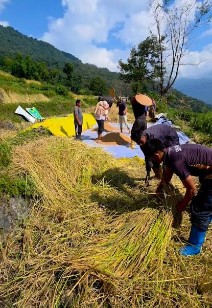
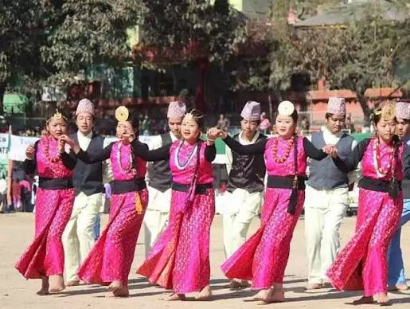
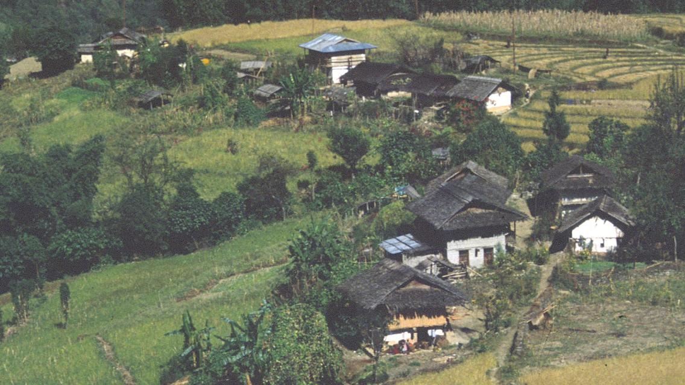

CELEBRATING CULTURE & HERITAGE
A celebration of harvest, gratitude, nature and the rich cultural heritage of the community.
Explore Tongsum ↓DISCOVER THE FESTIVAL

Tongsum is a harvesting festival associated with the Limboo community. The festival reflects the importance of agriculture, nature and the traditional way of life.
It is a time to celebrate the harvest, express gratitude for nature's blessings and appreciate the cultural traditions passed down through generations.
Tongsum represents the connection between people, their land, their agricultural practices and their cultural identity.
MEANING AND IMPORTANCE
Celebrating agricultural produce and the importance of harvesting in community life.
Expressing appreciation for nature, agricultural prosperity and life's blessings.
Bringing people together and strengthening relationships through shared traditions.
Preserving the cultural identity and traditional knowledge of the Limboo people.
TRADITIONS AND IDENTITY
The Limboo community has a rich cultural heritage expressed through its language, traditional practices, music, dance, clothing and customs.
Festivals provide an opportunity for communities to share their traditions, celebrate their identity and pass cultural knowledge to younger generations.
Tongsum is an opportunity to appreciate the relationship between agricultural life and Limboo cultural heritage.
CULTURAL EXPRESSIONS

Sharing traditions and celebrating together.
Appreciating traditional customs and identity.
Recognising the importance of agriculture.
“
TONGSUM — A Celebration of Culture
VISUAL STORIES
A glimpse into the agricultural traditions and cultural heritage of the Limboo community.
